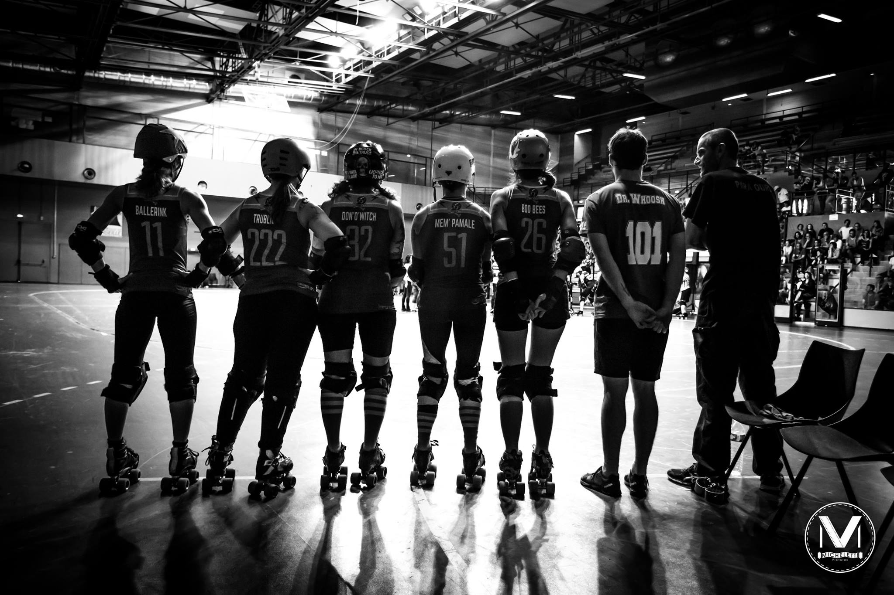

we are mrdc
Association loi 1901, le Marseille Roller Derby Club est un club sportif. Nous promouvons la pratique du Roller Derby à Marseille, un sport d’équipe et de contact en pleine expansion en France. Nous comptons chaque année une 50aine d’adhérent·e·s, femmes et hommes confondus.
Nous comptons 2 équipes féminines (Bloody Skulls & Mars Invaders), une équipe masculine (Les Chapacans) ainsi qu’une équipe d’arbitres (Les Rascasses).